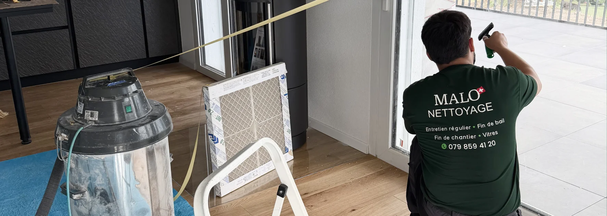

- Signal n°1 : un devis oral sans écrit — aucune preuve, aucun recours
- Signal n°2 : absence de numéro IDE sur la facture — activité non déclarée
- Signal n°3 : pas d'assurance RC Pro mentionnée — vous payez en cas d'incident
- Signal n°4 : aucune garantie de résultat écrite — le risque est pour vous
- Signal n°5 : prix très bas sans explication — quelque chose manque
- Signal n°6 : aucun avis Google récent vérifiable — opacité totale
- Signal n°7 : discours générique sans preuve terrain — belles promesses, zéro résultat
Pourquoi ces signaux sont importants
En Suisse, choisir la mauvaise entreprise de nettoyage pour un état des lieux peut coûter plusieurs centaines de francs en retenue sur caution. Pour un entretien de bureaux ou un nettoyage de chantier, le coût d'une prestation bâclée ou incomplète dépasse presque toujours le prix qu'on pensait économiser.
Ces situations arrivent chaque année à des milliers de locataires et de propriétaires en Suisse romande. Et dans la plupart des cas, les signaux étaient déjà là avant la signature.
Signal n°1 : un devis oral sans rien d'écrit
C'est le signal le plus fréquent et le plus dangereux. « On verra une fois sur place », « comptez environ 400 CHF », « on vous envoie quelque chose après » — ces réponses floues avant l'intervention deviennent des problèmes réels après.
Sans devis écrit, vous n'avez aucun recours si :
- La facture finale dépasse largement ce qui avait été évoqué
- Des prestations sont facturées sans avoir été convenues
- La régie refuse le résultat et l'entreprise décline toute responsabilité
⚠️ Ce qu'il faut exiger : un devis PDF signé, avec le détail des prestations pièce par pièce, le prix fixe total et les conditions de garantie.
Ce que nous faisons : chaque intervention commence par un devis écrit détaillé, envoyé avant toute signature. Le prix indiqué est le prix facturé — sans supplément.
Signal n°2 : pas de numéro IDE sur le devis ou la facture
En Suisse, toute société active au sens commercial doit posséder un numéro IDE (CHE-xxx.xxx.xxx), visible sur ses documents officiels. Une entreprise qui ne le mentionne pas opère probablement sans déclaration formelle.
Les conséquences pour vous :
- Aucune assurance RC Pro valide en cas d'incident dans votre logement
- Aucun recours légal en cas de litige
- Risque de travail non déclaré (problèmes légaux potentiels pour vous aussi)
⚠️ Ce qu'il faut faire : vérifier le numéro IDE sur le registre fédéral en ligne (uid.admin.ch) en quelques secondes.
Ce que nous faisons : notre numéro IDE figure sur chaque devis et chaque facture. Malo Nettoyage est une société enregistrée, déclarée et en règle.
Signal n°3 : l'assurance RC Pro n'est pas mentionnée
Un agent de nettoyage travaille dans votre logement ou vos locaux. Il manipule vos surfaces, vos appareils, vos objets personnels. Sans assurance RC professionnelle valide, tout incident (rayure, casse, dégât) reste à votre charge ou donne lieu à un long litige.
Beaucoup d'entreprises évitent ce sujet lors du premier contact. Une réponse floue (« oui oui on est assurés ») sans nom d'assureur ni possibilité de vérification est insuffisante.
⚠️ Ce qu'il faut demander : le nom de l'assureur RC Pro. Une réponse claire et directe (AXA, La Mobilière, Zurich, Allianz) est un bon signal. Une réponse évasive est un signal d'alerte.
Ce que nous faisons : Malo Nettoyage est assuré RC Pro auprès d'AXA. Cette information est disponible sur demande, sans délai.

Signal n°4 : aucune garantie de résultat écrite
« On fait de notre mieux », « si vous n'êtes pas satisfait, dites-le nous » — ces formules n'engagent à rien. Pour un nettoyage fin de bail, un résultat insuffisant aux yeux de la régie se traduit directement par une retenue sur votre caution.
Une entreprise qui refuse de s'engager par écrit sur le résultat transfère l'intégralité du risque sur le client.
⚠️ Ce qu'il faut exiger : une clause écrite de garantie de retour gratuit si la régie signale un point non conforme lié à l'intervention.
Ce que nous faisons : notre garantie retour gratuit est écrite dans chaque devis fin de bail. Si la régie signale un point lié à notre travail, nous revenons sans frais supplémentaires. 64 états des lieux sur 64 ont été validés — ce chiffre est notre engagement le plus concret.
Signal n°5 : un prix très bas sans explication
Un tarif anormalement bas ne tombe pas du ciel. Il cache presque toujours quelque chose :
- Personnel non déclaré (charges sociales inexistantes = prix artificiellement bas)
- Absence d'assurance (pas de prime à payer)
- Prestations tronquées (certaines zones ne seront pas traitées)
- Produits de mauvaise qualité
- Pas de garantie de résultat incluse
Le coût d'une retenue sur caution ou d'un sinistre non couvert est presque toujours supérieur à l'économie réalisée sur le devis.
⚠️ La bonne question : pas « pourquoi c'est cher ? » mais « pourquoi c'est si peu cher ? ».
Ce que nous faisons : nos prix sont dans les fourchettes du marché suisse romand (450 à 1'100 CHF pour une fin de bail selon la taille du logement). Nous n'offrons pas le prix le plus bas — nous offrons un résultat garanti.
Signal n°6 : aucun avis Google récent vérifiable
Les avis Google ne sont pas parfaits, mais ils restent l'un des rares moyens de vérifier qu'une entreprise a de vraies références récentes. Une absence totale d'avis ou des avis vieux de 2 à 3 ans sont des signaux qui méritent attention.
Trois points à regarder systématiquement :
- Le volume : quelques dizaines d'avis minimum pour un prestataire actif
- La date : des avis récents (moins de 12 mois) montrent une activité en cours
- Les réponses : comment l'entreprise réagit aux avis négatifs révèle sa culture client
⚠️ Signal d'alerte particulier : une note parfaite (5.0/5) avec très peu d'avis peut indiquer des avis gérés manuellement, pas une vraie satisfaction client généralisée.
Ce que nous faisons : Malo Nettoyage a plus de 70 avis Google vérifiables, avec des avis récents. Nous répondons à chaque avis — positif ou négatif — de façon personnelle.
Signal n°7 : un discours générique sans aucune preuve terrain
« Nous offrons un service de qualité », « nos équipes sont professionnelles », « la satisfaction client est notre priorité » — ces phrases ne signifient rien sans preuve concrète.
Une entreprise de nettoyage sérieuse peut citer des chiffres, des cas concrets, des témoignages réels, des photos avant/après. Si le site web ou le premier échange ne contient aucun élément concret, méfiez-vous.
⚠️ Ce qu'il faut chercher : des preuves spécifiques — pas des formules génériques.
Ce que nous faisons : 64 états des lieux validés sur 64. Des photos avant/après réelles sur nos interventions. Des témoignages clients non anonymes. Une méthode terrain documentée pour chaque type de prestation. Ce n'est pas un discours — c'est un historique vérifiable.
Tableau récapitulatif
| Signal d'alerte | Ce que ça cache | Ce qu'il faut exiger |
|---|---|---|
| Devis oral uniquement | Aucun recours possible | Devis PDF écrit, prix fixe |
| Pas de numéro IDE | Activité non déclarée | Vérification sur uid.admin.ch |
| Assurance RC floue | Vous payez les incidents | Nom de l'assureur explicite |
| Pas de garantie écrite | Risque 100% côté client | Clause retour gratuit dans le devis |
| Prix anormalement bas | Prestations tronquées ou personnel non déclaré | Comparer les prestations incluses |
| Aucun avis récent | Opacité ou inactivité | Minimum 20 avis, récents, répondus |
| Discours générique | Aucune preuve terrain | Chiffres, photos, témoignages réels |
Ce que ça change concrètement pour un état des lieux
Pour illustrer l'enjeu : une caution de 3 mois sur un loyer de 1'200 CHF représente 3'600 CHF bloqués. Une retenue partielle de 20 % pour un nettoyage insuffisant = 720 CHF perdus.
Un nettoyage professionnel avec garantie pour ce même logement (3.5 pièces) coûte en fourchette basse 600 à 900 CHF. Le calcul est simple : une entreprise fiable avec garantie coûte moins cher qu'une retenue sur caution, même sur un devis plus élevé.
FAQ – Choisir une entreprise de nettoyage fiable
Comment vérifier rapidement si une entreprise de nettoyage est légale en Suisse ?
Rendez-vous sur uid.admin.ch et entrez le nom de l'entreprise ou son numéro CHE. Si elle est enregistrée, ses informations apparaissent immédiatement. Une entreprise active sans numéro IDE visible sur ses documents est un signal d'alerte sérieux.
Une garantie de retour gratuit est-elle vraiment contraignante pour l'entreprise ?
Oui, si elle est écrite dans le devis. Une garantie verbale n'a aucune valeur légale. Une clause écrite engage l'entreprise contractuellement. Exigez qu'elle figure noir sur blanc dans votre devis avant de signer.
Un prix bas peut-il parfois être justifié ?
Oui, dans de rares cas — une promotion, une période creuse, un chantier proche d'un autre. Mais ces situations doivent être expliquées. Un prix bas sans aucune explication mérite toujours d'être interrogé : demandez ce qui est inclus et ce qui ne l'est pas, et comparez les prestations ligne par ligne.
Les avis Google peuvent-ils être faux ?
Oui, c'est possible. Des achats d'avis existent. Les signaux à surveiller : une note parfaite avec très peu d'avis, des avis tous rédigés le même jour, des profils sans historique d'autres avis. À l'inverse, une note de 4.6 ou 4.7 avec des dizaines d'avis variés est généralement plus fiable qu'un 5.0 sur 8 avis.
Doit-on toujours demander plusieurs devis pour un nettoyage ?
C'est une bonne pratique, mais le nombre de devis importe moins que leur qualité. Deux devis comparables sur les mêmes prestations valent mieux que cinq devis impossibles à comparer. Ce qui compte : les prestations incluses, la garantie proposée, la preuve que l'entreprise est légale et assurée.
En résumé
Choisir une entreprise de nettoyage en Suisse romande ne se résume pas à comparer des prix. Les 7 signaux listés ici permettent d'identifier rapidement les prestataires qui font peser le risque sur le client — et de choisir ceux qui l'assument eux-mêmes. Un devis écrit, un numéro IDE vérifiable, une assurance RC Pro nommée et une garantie de résultat écrite : ces quatre éléments seuls éliminent la grande majorité des mauvaises surprises.
Vous voulez vérifier que Malo Nettoyage coche toutes ces cases avant de demander un devis ? Demandez-nous un devis gratuit — réponse sous 24h, prix fixe écrit, garantie retour incluse.